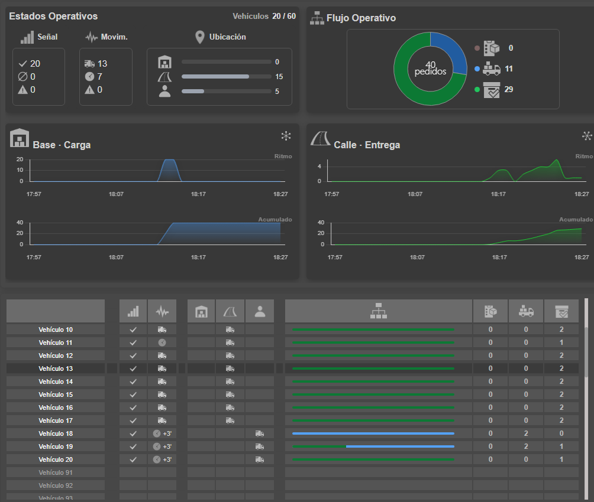
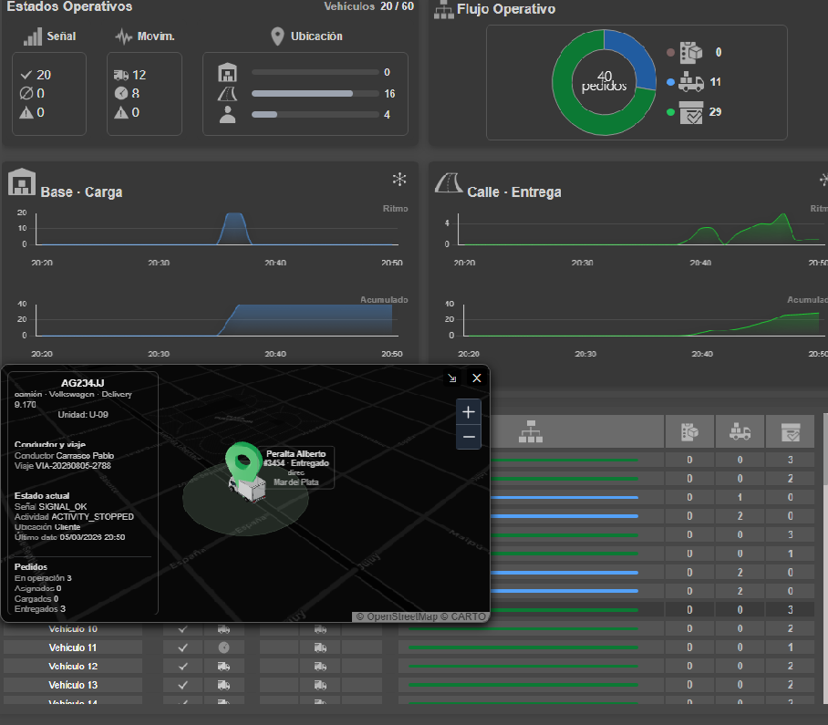
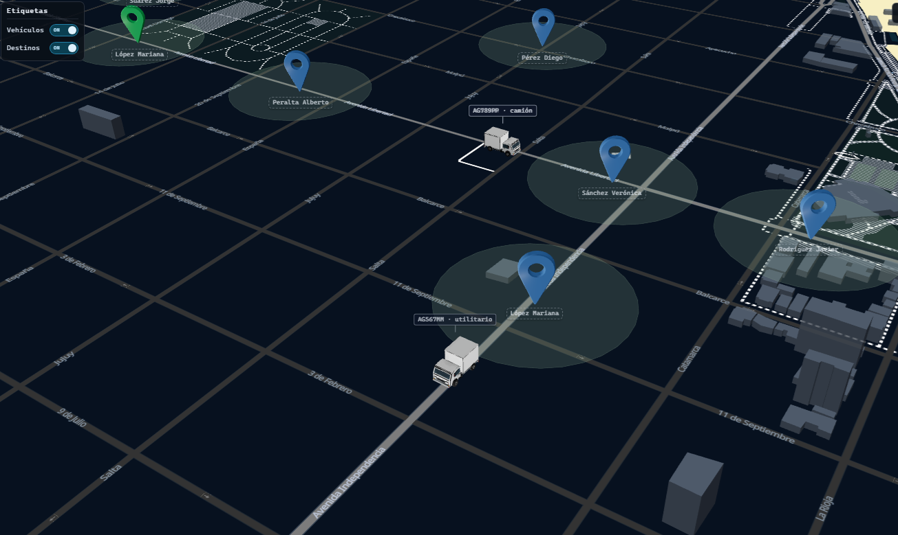

Demo 1
Mapa operativo 360°
Vista dinámica del mapa operativo con recorrido 360°, vehículos y ubicaciones georreferenciadas en entorno 3D.
Plataforma operativa de geolocalización, monitoreo de flotas, trazabilidad de pedidos, dashboards, KPIs y procesamiento de eventos en tiempo real.
GEO-SYSTEM es un proyecto desarrollado para integrar monitoreo de vehículos, eventos operativos, estados de pedidos, ubicación en mapa, indicadores visuales y actualización en tiempo real dentro de una misma plataforma de control.
Esta landing presenta capacidades reales de análisis, diseño técnico, desarrollo backend, integración de datos y visualización operativa
El sistema organiza datos provenientes de vehículos, simuladores y procesos operativos para transformarlos en información visual útil para monitoreo y toma de decisiones.
Vista dinámica del mapa operativo con recorrido 360°, vehículos y ubicaciones georreferenciadas en entorno 3D.
Seguimiento individual de una unidad mediante ventana flotante, manteniendo visible el contexto general de la operación sobre el mapa.
Seguimiento de una unidad durante su regreso e ingreso a base luego de completar las entregas, dentro del contexto operativo del mapa.
Vista operativa con 20 vehículos activos: 15 en calle y 5 en clientes. El flujo registra 40 pedidos en operación, con 11 cargados pendientes de entrega y 29 entregados.

Seguimiento individual de una unidad mediante ventana flotante, integrado sobre el tablero operativo sin perder la visión general del sistema.

Vista panorámica del mapa operativo con vehículos y ubicaciones georreferenciadas, utilizando cartografía OpenFreeMap Liberty.

Responsable del diseño funcional, modelado de datos, definición de reglas operativas, arquitectura backend, desarrollo de APIs, procesamiento en tiempo real, dashboards, mapas, KPIs y visualización de indicadores.
Buenos Aires, Argentina